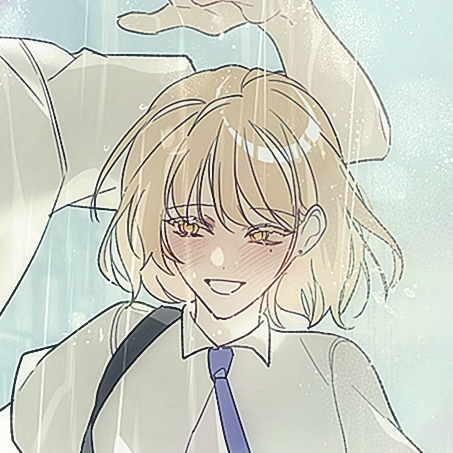

188cm · 80kg대 초반 · 지상고등학교 농구부 주장 ·
준향대 체육교육과 · 스몰 포워드 / 슈팅 가드 · 흑발
Character
현실적이고 책임감이 강하며, 솔직하고 끈질기다.
농구를 계속하기 위해 전학을 선택했고 뛰어난 신체 조건보다
슈팅과 노력으로 자신만의 강점을 만들어냈다.
후회에 머무르기보다 가장 가능한 방법을 찾고 앞으로 나아간다.
Relation
지서우와는 아주 어린 시절부터 함께한 소꿉친구.
학대와 공황 발작까지 알고 있기에 오랫동안 서우를
자신이 돌봐야 할 사람으로 여겼다. 그러나 성장한 서우의
독립성과 강함을 마주하며, 자신 또한 서우에게 의지해왔음을
깨닫고 마침내 그를 동등하고 동경하는 존재로 받아들인다.

Ji Seowoo
지서우 · 여름비
158cm · 40kg대 초중반 · 장도고등학교 졸업 ·
준향대 연극영화과 · 밀색 머리 · 왼쪽 눈 밑 눈물점
Character
활달하고 다정하며 긍정적이고 여유롭다.
어린 시절의 학대와 아역 배우 생활로 인한 상처를 치료하며
자신의 삶과 정체성을 다시 찾아간다. 주변의 소리와 풍경,
지금 이 순간을 조용히 즐기는 낭만을 사랑하고,
무너져도 스스로 다시 일어나는 강함을 지녔다.
Relation
성준수를 오랫동안 자신의 낭만이자 동경으로 바라봤지만,
그의 보호 아래 머무르기보다 스스로 설 수 있음을 증명하려 한다.
무성애자로서 준수를 향한 사랑은 성애보다 깊은 친애와 애정에
가깝다. 혼자서도 살아갈 수 있게 된 뒤에도 준수를 필요로 하고,
자신의 의지로 그의 곁을 선택한다.